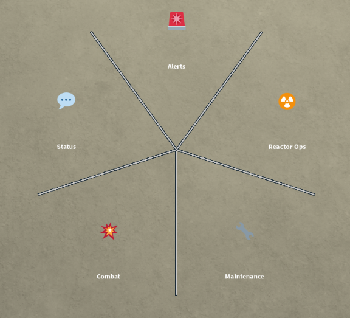

QUICK CHAT
| 操作 | [X] キー / マウススクロール |
|---|---|
| 追加 | Robloxアップデート |
| 開発者 | Naramo |
| カテゴリ | Features |
Quick Chat
新しいRobloxのアップデートに伴い、Naramoはプレイヤー向けのクイックチャット機能を追加した。[X]キーを押すか、マウスのスクロール操作を行うことでこの機能を使用できる。
QuickChat
[X]キーを押すとメニューが開き、様々なプリセットから選択できるようになる。プリセットのいずれかをクリックするとそれが送信され、チャットの可否に関わらずすべてのプレイヤーの頭上に表示される。さらに、ラジオ放送がアクティブな場合は、chosen preset [preset]という形式でラジオに送信される。